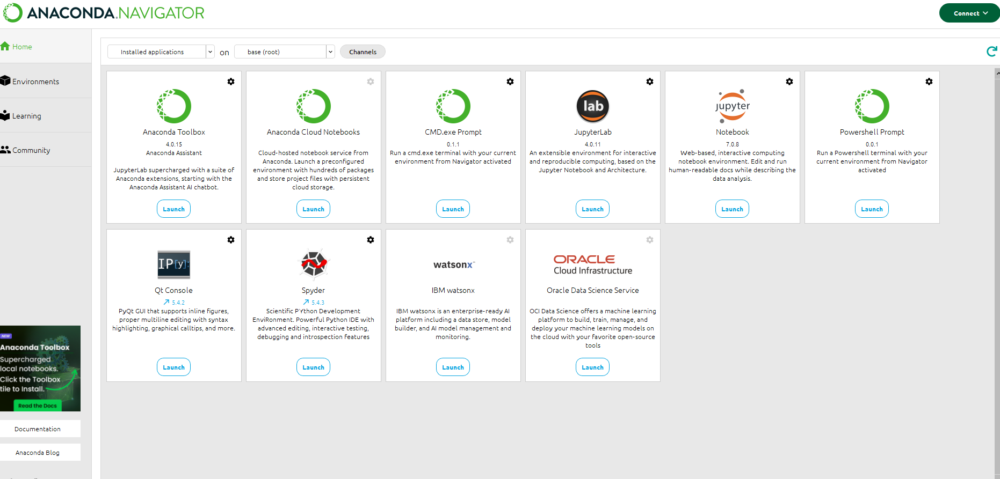
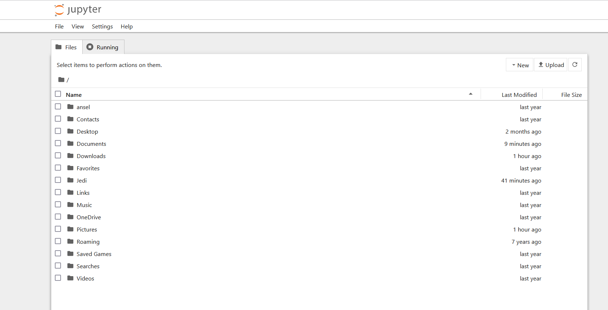
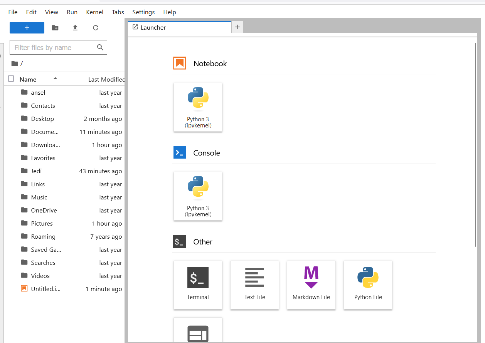
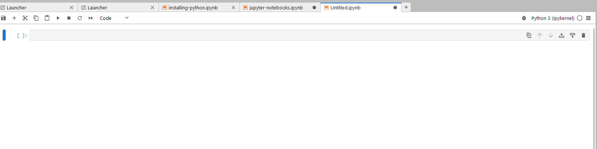
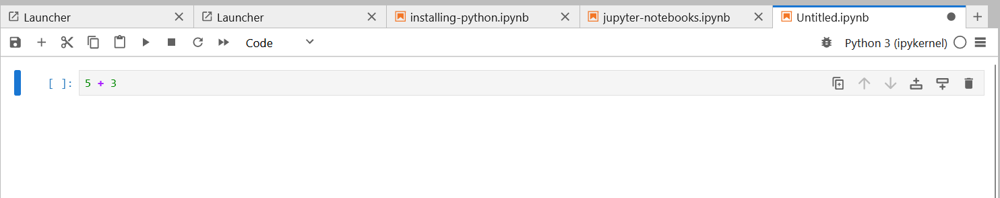
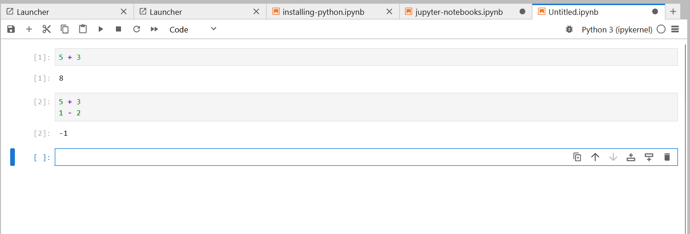
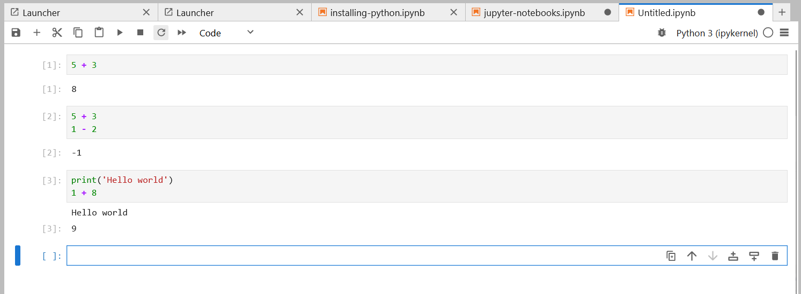

Jupyter Notebooks#
Throughout this training course, you will be using jupyter to write python code, perform data analysis, present results, create visualization, and more. Jupyter notebooks offer data scientists a way to build interactive environments that combine code, documentation, and output. In fact the lecture notes that you will be reading are written in jupyter notebooks.
Launching Jupyter notebook#
If you installed python through the anaconda distribution, you should be able to launch Jupyter Notebook or Jupyter Lab in Anaconda Navigator.
You can also launch them through Anacaonda Prompt. Just run the commands jupyter lab or jupyter notebook. You can select either jupyter lab or jupyter notebook.

It’s up to you on which environment you prefer. Both of them will run through your browser.
Creating notebooks#
Once you’ve launched jupyter through either lab/notebook, you should be able to see a file explorer page/tab.


The file explorer shows the directory where you installed anaconda or where your ran the command. From here you can navigate to the folder of your choice and create a new notebook. When creating a notebook, jupyter might ask you to select a kernel. Choose Python3 (ipykernel).
Interacting with python through Jupyter Notebooks#
Jupyter notebooks are composed of cells. Cells can either contain code, markdown, or raw text. With an new notebook you start with one code cell

Click on the cell to edit it. Since this is a code cell, it is expecting python code. We can write a python expression here

While the cell is selected, you can press Shift+Enter to run the cell (note how this also automatically adds an empty code cell in the bottom). When a code cell is run the code inside it will be executed. It will also check the last line of the cell and try to print its evaluation.

In the example above we have created a new cell and added two lines of expression. Notice how in the second cell, there is only one output. As said before, the cells output will automatically display the evaluation of the last line of code.
You can also force jupyter to display other things by explicitly calling python’s print() function

If you want to change the cell type of a cell, you can select the desired type in the dropdown found in the tool bar. Other than code cells, you can choose between raw text cells, and markdown cells. Raw text cells will simply render the text placed inside it, while markdown cells will render the text with markdown formatting. Raw text cells and markdown cells are not executed by jupyter. Use these cells to add narratives or documentation.
For more detailed tutorials, tips, and tricks on how to use Jupyter you check the following external resource: